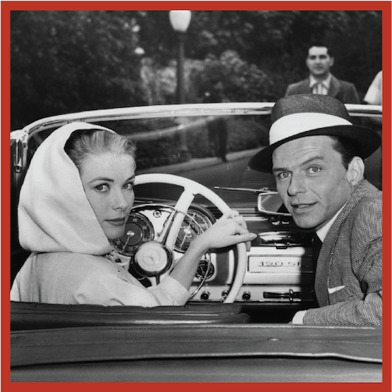
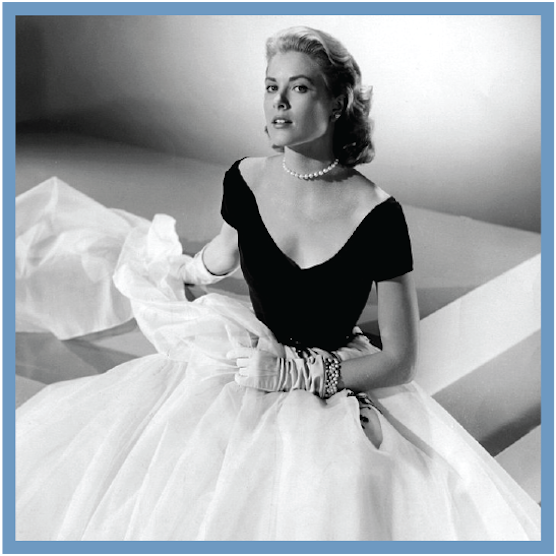

GRACE KELLY

hollywood career
Despite her parents’ initial disapproval, Kelly decided to pursue her dreams of becoming an actress. John was particularly displeased with her decision; he viewed acting as “a slim cut above streetwalker”.To start her career, she auditioned for the American Academy of Dramatic Arts in New York, using a scene from her uncle George Kelly’s The Torch-Bearers (1923). Although the school had already met its semester quota, she obtained an interview with the admissions officer, Emile Diestel, and was admitted through the influence of George. Kelly worked diligently, and practiced her speech by using a tape recorder. Her early acting pursuits led her to the stage, and she made her Broadway debut in Strindberg’s The Father, alongside Raymond Massey. At 19, her graduation performance was as Tracy Lord in The Philadelphia Story. Television producer Delbert Mann cast Kelly as Bethel Merriday in an adaptation of the Sinclair Lewis novel of the same name; this was her first of nearly 60 live television programs. As a theater personality, she was mentioned in Theatre World magazine as: “most promising personality of the Broadway stage of 1950.” Some of her well-known works as a theater actress were: The Father, The Rockingham Tea Set, The Apple Tree, The Mirror of Delusion, Episode (for Somerset Maugham’s tele-serial), among others.

Success on television eventually brought her a role in a major motion picture. Impressed by her work in The Father, the director of the Twentieth Century-Fox film Fourteen Hours (1951), Henry Hathaway, offered her a small role in the film. Kelly had a minor role, opposite Paul Douglas, Richard Basehart, and Barbara Bel Geddes, as a young woman contemplating divorce. Kelly’s co-artist Paul Douglas commented of her acting in this film: “In two senses, she did not have a bad side– you could film her from any angle, and she was one of the most un-temperamental cooperative people in the business.” Following the release of this film, the “Grace Kelly Fan Club” was established. It became popular all over the United States, with local chapters springing up and attracting many members. Kelly referred to her fan club as “terrifically amusing”.
Kelly was performing in Colorado’s Elitch Gardens when producer Stanley Kramer offered her a role co-starring opposite Gary Cooper in Fred Zinnemann’s High Noon, a Western set in an historic old mining town in Columbia, California. She accepted the role, and the film was shot in the late summer/early fall of 1951 over a 28-day shooting schedule in hot weather conditions. She was cast as a “young Quaker bride to Gary Cooper’s stoic Marshall”, and she wore a “suitably demure vaguely Victorian dress”, alongside Gary Cooper, who was 28 years her senior. The movie was released.